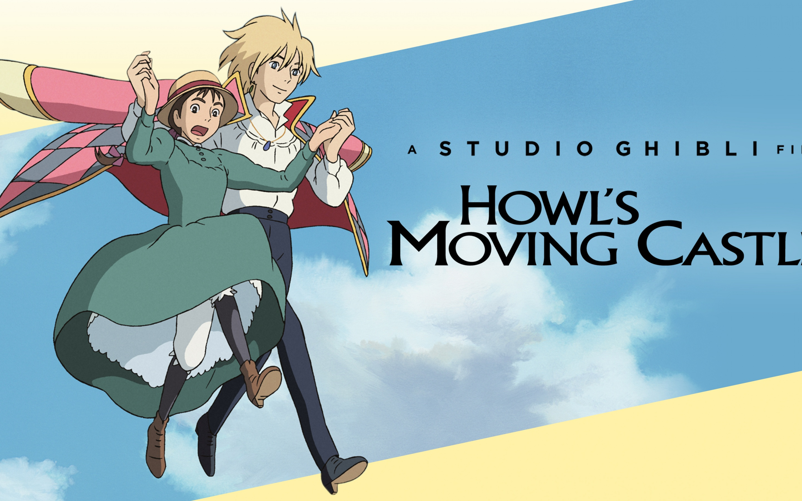
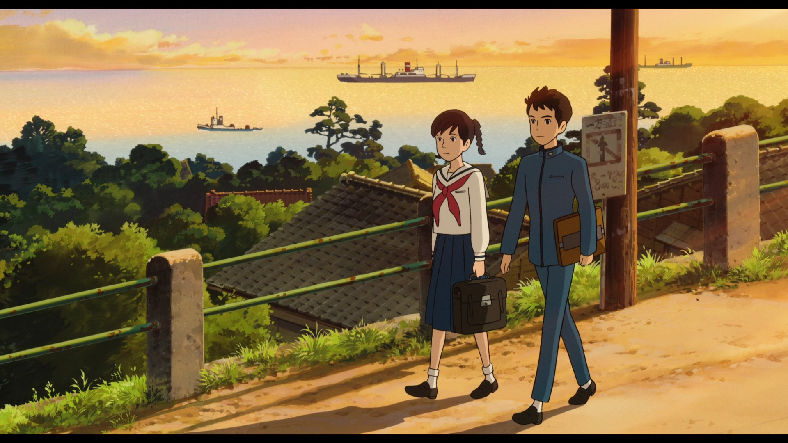

Howl's moving castle

Howl’s Moving Castle is a whimsical fantasy novel by Diana Wynne Jones (and a celebrated Studio Ghibli film adaptation) that follows Sophie Hatter, a young, responsible woman working in her family's hat shop who believes she is destined for a dull life. Her world is turned upside down when the spiteful Witch of the Waste transforms her into a ninety-year-old woman. Determined to break the curse, Sophie leaves home and finds refuge as a cleaning lady in the magical, chaotic , and ever-shifting castle of the enigmatic and vain Wizard Howl. Alongside a colorful cast including Calcifer, a sarcastic fire demon bound to Howl by a mysterious contract, and Michael, Howl’s young apprentice Sophie learns that Howl is far more complex and compassionate than his reputation suggests. As she navigates a brewing war, magical contracts, and her own growing affection for the wizard, Sophie ultimately discovers her own immense magical inner strength, lifting her own curse and saving Howl from losing his humanity.
From up on poppy hill

From Up on Poppy Hill is a nostalgic and tender Studio Ghibli coming-of-age film set in 1963 Yokohama, Japan, centering on Umi Matsuzaki, a responsible high school girl who manages her family’s boarding house and faithfully raises signal flags each morning in memory of her father, a sailor lost in the Korean War. Umi's routine takes an exciting turn when she crosses paths with Shun Kazama, a charismatic and passionate member of the school's journalism club. Together, they rally their fellow students to save "The Latin Quarter," their beloved but dilapidated, historic clubhouse threatened with demolition by the school board in the name of modern progress. As Umi and Shun work side-by-side to clean up the clubhouse and advocate for its preservation, a deep romantic bond blossoms between them. However, their developing relationship faces a sudden and emotional hurdle when they discover a secret regarding their pasts that suggests they might share the same father. Navigating the complexities of grief, post-war history, and young love, the two teenagers ultimately uncover the truth about their parents, securing both the future of their clubhouse and a profound, lasting connection to their heritage.